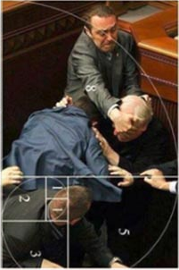

返回主页
打架博弈

乌克兰议员打架照呈“黄金比例”，堪称文艺复兴经典油画。乌克兰喜欢橙色，搞了革命。但西方的民主需要文质彬彬的，质代表体力。
在乌克兰议会，拳脚相加的戏码并不少见。2014年8月，议会内就再次上演了“武斗”，起因是一项新法案将征召更多的预备役军人入伍以反对俄罗斯。
Wer spielen kann, lernt besser!
偷天陷阱
俄罗斯不惧美国制裁？少年普京从打架中学到了什么
汪宁/上海外国语大学俄罗斯研究中心主任
2014-08-04
澎湃新闻
在美国的压力之下，欧盟的制裁大棒终于落下。这个堪称“最严厉的制裁”的确是致命的，内容涵盖了能源、金融、军事和敏感技术等诸多项目，目的就是要把俄罗斯经济打回原形，用招招见血来形容也许并不过分。如果成功，俄罗斯必须面对的挑战是十分严峻的。
人口应该少而精
莫比乌斯环
普京将如何应对？世界瞩目。回顾普京的成长道路和性格形成时期的两个小故事，也许能够从中预知一二。
故事一，不惧打击，超越对手。
受家庭影响，普京从小性格倔强，从不服输。由于那个时代的生活条件艰苦，先天身体条件很不好，从学习拳击开始锻炼身体。为了战胜对手，普京刻苦训练，吃过相当多的苦头。最严重的一次是训练时被对手打断了鼻梁，但是他没有上医院，而是强忍着疼痛让甚至瞒着父母，让它自己慢慢康复。由于体质不够强壮，在教练的说服下普京改学柔道。有一次在表演赛中，他面对的是全苏联冠军。在比赛当中他的手臂被擒拿住并被扭得发出了声响，几乎快要断裂，但他仍然没有认输。最后是裁判不得不中止了比赛，判定普京失败。这使得普京后来回忆起来仍然还是耿耿于怀，不承认自己当时输掉比赛。
鲜血和汗水没有白流，更强、更壮的信念激励着普京攻克下一个又一个难关。
从1971年19岁起开始参加各种比赛。那一年，普京用一连串优异的战绩证明了自己的成功：首次参加的是列宁格勒市青年桑勃式摔跤锦标赛；1972年参加世界青少年柔道循环赛。取得的成绩是：波罗的海地区青年锦标赛第一名；列宁格勒市青年锦标赛第三名；列宁格勒市成人冠军杯赛第五名；列宁格勒市大学冠军杯赛第一名。1973年，普京刚满21岁就作为一名在校大学生获得了桑勃式摔跤运动健将称号，这无论是在同龄人还是在当时那个年代都是非常值得骄傲的事情。1975年又获得柔道运动健将的称号。
如果普京听从了父母和教练的话，走的是一条顺风顺水的平稳道路的话，也许，正如他当时的教练所期望的那样：“他不仅可以成为全苏联的冠军，还可以成为整个欧洲的冠军。” 然而普京走的是一条自己设定的人生道路。后来的事实证明了他的抉择是正确的。通过体育运动，普京强健了身体，磨砺了意志，领悟到体育运动的真谛，为后来完成历史赋予的大任奠定了坚实的基础。
如果中国经济走弱
故事二，强国先需强人。
体育运动练就了普京坚强的性格。“为人为国，非强大不可立足，”这是普京后来得出的经验教训。几十年过后，已经当上总统的普京对发生在学龄前的一段往事仍然记忆忧新，并且从儿时斗殴这样一件小事情中做出了深刻的总结。普京回忆说：“我甚至还记得事情发生的地点和经过：是在邻居家的院子里，而不是在我的‘领地’上。当我第一次被揍的时候心里很是窝火。揍我的那个小伙子看上去其貌不扬。但很快就弄清楚，他的实际年龄比我大得多，身体也棒得多。那次事件对我来说是第一堂正正经经的‘马路大学’课，而且成为一次很有益、很严肃的教训，从中我得出四点教训：
第一点，是我错了。具体的细节已经忘记，好像是那小伙子只是对我讲了一句不礼貌的话。 而我也毫不客气地粗鲁地回敬了他。实际上我根本就没有必要去冤枉别人，因此马上就受到惩罚，这是应有所得。在当时我的心里也是这样想的。
第二点，如果我面对的是一个身材高大的人，也许我就不至如此了。只是因为那小伙子一眼看上去其貌不扬，因而感觉到那是可以欺负的人。直到我被揍了以后才意识到不可如此。我明白，对待任何人都不可如此卤莽，应当尊重所有的人。这是一堂很好具有‘示范意义’的教训！
第三点，我终于明白，在任何情况下，无论我是有理还是没有理，都应该是一个强者，这样才有机会予以回击。因为那小伙子没有给我任何机会。也没有机会！
第四点，我得出结论，应该时刻准备好对受到的侮辱立即进行还击，要立即回击！
总体说来，我在打架的时候不会冒冒失失，也不会丧失理智。因为我知道，无论是打什么架，如果你想获胜就必须坚持到底，就像打仗一样，一定要坚持到决定性的战斗结束。
此外，我还清楚地认识到，不到情况万分紧急的时候千万不要卷入事端。但如果一旦事情发生了，那么就应该明确，后退是没有出路的。一定要拼到最后。当然，这个众人皆知的规则是后来在国家安全委员会学会的，但掌握它的时间要早得多，是在儿时的斗殴中。”
普京儿时就总结出的这个经验教训促使他后来积极参加柔道等各种体育健身活动，通过体育锻炼既增强了自己的体质，成为“强有力”的人，又磨练出自己坚强的性格。后来又成为他自主地选择了进入国家安全部门的人生道路的重要原因。当上总统之后，又从这四点教训中发展引申出治理国家的理念。
中国人越来越不喜欢足球了？
中国围棋复兴
综观乌克兰危机突发和美欧联合施加各种压力及制裁以来俄罗斯的表现，可以说普京做得有理有节，充分发挥了他对这四点经验的灵活运用。
应对措施一，不惧怕，以强对硬，以快应变。这是俄罗斯文化传统，乌克兰危机发生以来普京表现得淋漓尽致，已经无需在此赘言。
应对措施之二是讲道理，尊重对手，据理力争。
危机发生后，普京几乎是在第一时间与包括美国总统在内的各大国领导人通过电话，表述俄罗斯的立场。尤其是3月18日在克里姆林宫向俄国家杜马议员、联邦委员会成员、俄联邦各地区负责人和公民社会代表，以及前克里米亚领导人发表的极具爱国激情的演讲，不仅赢得了俄罗斯人的民心，也使得不少德国人表示理解俄罗斯的行为。即使是在受到美欧7月29日作出升级制裁的决定之后，普京仍然于8月1日与美国总统奥巴马通了电话，明确表示西方国家对俄罗斯施加经济制裁“将起到反作用，严重破坏了双边关系和整体的国际稳定”，迫使奥巴马也不得不承认，美国和欧盟对俄罗斯实施的新一轮经济制裁“还没有能够解决（乌克兰）问题”。普京与诸多国家领导人保持热线电话联系，在重大国际事务发生时，都会及时通报观点和交流意见。
第三个应对措施是成为强者，寻找机会，予以回击。
回击的机会永远属于强者，普京对这个从小用自己的鲜血换来的道理理解得最深。因此，早在乌克兰危机爆发初期，普京就采取了一系列防范措施，可谓是未雨绸缪，包括与中国签署了天然气协议、与金砖国家一起建立金砖国家开发银行，设立储备基金池，如此等等。
硬实力的防范力度更加大，筹备得更久。普京上台伊始就推动了一系列旨在恢复俄罗斯军力的措施，十几年过去，已经取得不俗的成果。2012年，普京在《俄罗斯报》上发表文章，认为“随着全球资源争夺愈发激烈，强化军力有助保护国家资源”，表示俄罗斯计划在今后十年将花费23万亿卢布(约合7700亿美元)采购超过400枚洲际弹道导弹、大约100个军用航天器、2300多辆坦克、600多架先进战斗机、数十辆潜水艇和军舰以及数以千计军用车辆等军事装备。
俄罗斯底气十足，不惧怕美欧等制裁和高压，正是源自于俄罗斯强大的硬实力。因此，被列于制裁名单的俄罗斯外贸银行当即发表声明，谴责美欧等所谓制裁“不符合自由市场的核心原则和价值”，表示“虽然受到制裁，但俄罗斯外贸银行及其所有附属公司将继续照常营业，履行所有对投资人和持股人的契约。”另一家同样受到制裁的俄罗斯天然气工业银行也表示，欧盟的制裁不会影响到银行的稳定。
所谓“经济制裁”通常包括：实施贸易禁运、中断经济合作、切断经济或技术援助等几个时段。美国实施的经济制裁方式通常包括切断与被制裁对象的贸易往来、断绝美国和被制裁者的金融联系。作为介于舆论打击和军事打击之间的安全战略手段之一，美国对经济制裁运用得最多。据统计，冷战后的10年内，在国际上50件经济制裁案例中，近三分之一是由美国单方面实施的。但众所周知，经济制裁也是一把双刃剑，制裁国也会遭受损失，尤其是全球经济一体化迅速发展的今天。这次美国逼迫欧盟对俄罗斯实施制裁，遭到欧盟国家的反对，就是害怕伤及自身。因为俄罗斯一定会反击，普京深喑必须“立即还击”的道理。来自澎湃新闻thepaper.cn
version:1.0; jobnet@188.com © retter2012.com